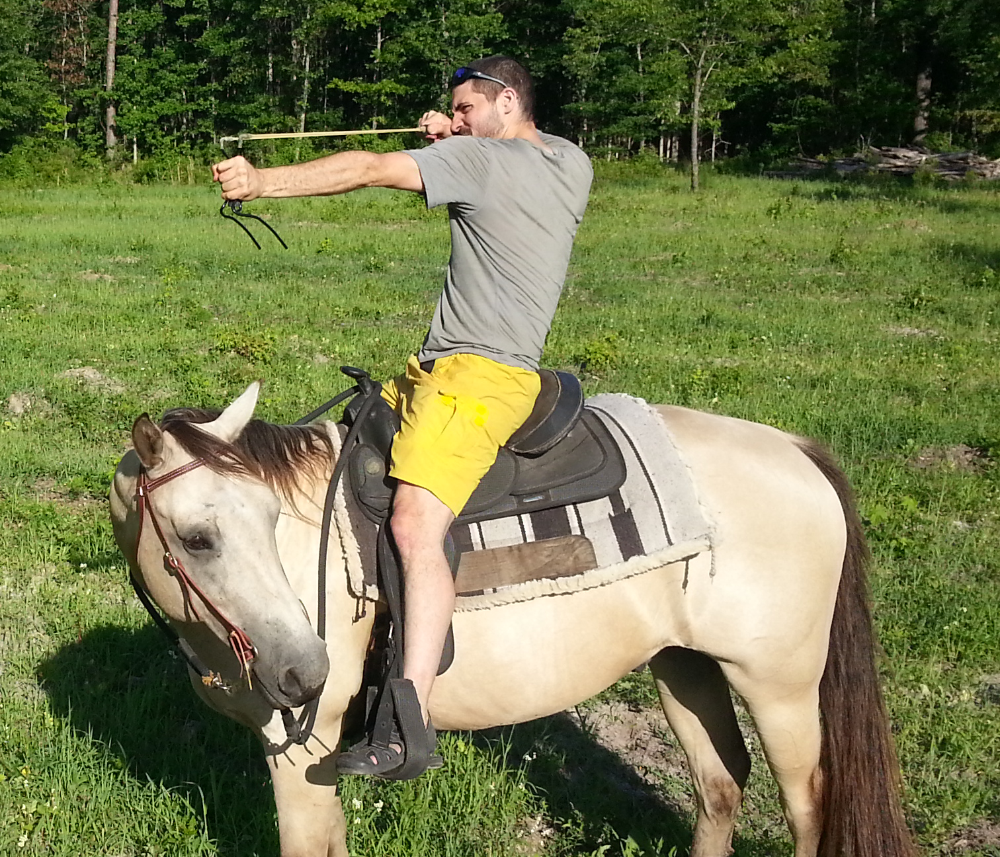

Just horsin' around

I don't even know who's horse this is
I've done a lot, man. At 26, I got tired of working minimum wage jobs and started my own humane chicken farm. For years, I lived off the grid in a broken down trailer, with no plumbing except a hose in the yard. Upon re-entering society, I got a bachelor's degree in elementary education from the College of Charleston. That turned out to be a bit of a misstep, because while I love kids (and boy do they love me), it turns out I hate beaurocracy. So I retreated back into the woods to find myself. It was there that an old hermit named David White Bird who helped me to discover that my true talent is in creative problem solving. It's a looong story, but here we are.
Why I Want To Become A Coder
It's truely what I was built for
Since early childhood, I have always been known for being extremely logical, to the point where illogical things could make me quite upset. Much later in life, I found out that, like many in this field, I am probably "on the spectrum". So when I started learning Python, everything just seemed to click. Communicating with computers is a uniquely satisfying experience, because they operate by a set of logical rules (unlike the staff of an elementary school). Coding is my destiny. It's what I was meant to do. And I'm pretty excited about not being poor anymore, not gonna lie. With the money, I'm going to move to the country, befriend the local wildlife, and pursue my true passion, musical comedy. Check the links in the header if you want a taste.
I'm a military brat with no true home except the inner sanctum of my own imagination. My passions include making music, animal rights, dungeons and dragons, anime, and finding inner peace before the singularity hits.